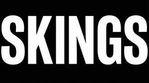

Trade Mark Journal No.2026/009 27 February 2026
UK00004328727 23 January 2026 (1,2,3,16,17,21,35)
Mark 1
SKINGS
Mark 2

- Class 1
- Industrial chemicals for use in surface preparation, cleaning, treatment and finishing processes; chemical preparations for automotive refinishing; degreasers and cleaning chemicals for industrial and automotive use; chemical additives for paints, coatings and surface treatments; adhesives and bonding agents for industrial purposes; chemical preparations for removing paint, coatings, rust and contaminants.
- Class 2
- Paints, varnishes, lacquers, coatings, primers, clearcoats and protective finishes; anti-corrosive preparations; surface coatings for automotive, industrial and commercial use; protective coatings against deterioration, weathering and abrasion; colouring agents for automotive refinishing.
- Class 3
- Abrasives; sanding preparations; polishing compounds; surface finishing preparations; cleaning, buffing and degreasing preparations; chemical preparations for cleaning and preparing surfaces prior to painting or coating; glass cleaning preparations; matte paint cleaning preparations.
- Class 16
- Paper and cardboard; masking paper; protective paper sheeting; disposable paper materials for surface protection; packaging materials of paper or cardboard; instructional and printed materials relating to automotive refinishing and surface preparation.
- Class 17
- Plastic films and plastic sheeting for surface protection; masking tapes; adhesive tapes for industrial use; protective plastic coverings; insulating and protective plastic materials; semi-processed plastic materials for industrial applications.
- Class 21
- Non-metallic containers; plastic mixing cups and lids; measuring containers; mixing tools; applicators; brushes and rollers; household or industrial utensils and containers for use in automotive and surface finishing applications.
- Class 35
- Advertising, promotional and marketing services; import-export agency services; business management; business administration; retail, online retail and wholesale services in relation to automotive refinishing products, surface preparation products, paints, coatings, abrasives, masking materials, and body shop consumables and accessories; retail and online retail services in relation to industrial chemicals for use in surface preparation, cleaning, treatment and finishing processes, chemical preparations for automotive refinishing, degreasers and cleaning chemicals for industrial and automotive use, chemical additives for paints, coatings and surface treatments, adhesives and bonding agents for industrial purposes, chemical preparations for removing paint, coatings, rust and contaminants, paints, varnishes, lacquers, coatings, primers, clearcoats and protective finishes, anti-corrosive preparations, surface coatings for automotive, industrial and commercial use, protective coatings against deterioration, weathering and abrasion, colouring agents for automotive refinishing, abrasives, sanding preparations, polishing compounds, surface finishing preparations, cleaning, buffing and degreasing preparations, chemical preparations for cleaning and preparing surfaces prior to painting or coating, glass cleaning preparations, matte paint cleaning preparations, paper and cardboard, masking paper, protective paper sheeting, disposable paper materials for surface protection, packaging materials of paper or cardboard, instructional and printed materials relating to automotive refinishing and surface preparation, plastic films and plastic sheeting for surface protection, masking tapes, adhesive tapes for industrial use, protective plastic coverings, insulating and protective plastic materials, semi-processed plastic materials for industrial applications, non-metallic containers, plastic mixing cups and lids, measuring containers, mixing tools, applicators, brushes and rollers, household or industrial utensils and containers for use in automotive and surface finishing applications.
Car Colour Services Ltd
Representative: Trade Mark Wizards Limited